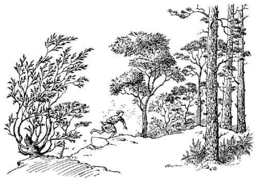
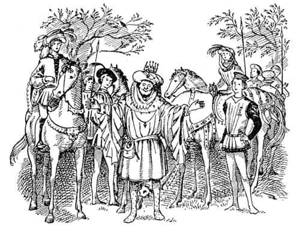

Beklenmeyen Yol Arkadaşı
Shasta kapıdan çıkar çıkmaz, önünde, ilerideki ağaçlara kadar uzanan çimenler ve süpürgeotlarıyla kaplı bir yamaç buldu. Şimdi düşüneceği hiçbir şey, yapacağı hiçbir plan yoktu; gerekli ve yeterli olan şey, sadece koşmasıydı. Kolları ve bacakları titriyordu. Böğrüne sancı girmeye başlamıştı. Gözlerine kaçan ter damlaları gözlerini yakıyor, görmesini engelliyordu. Ayakta doğru düzgün duramıyordu ve taşlar yüzünden birkaç kez neredeyse ayağını incitecekti.
Ağaçlar şimdiye kadar gördüklerinden daha sıktı. Biraz açıklık olan alanlar, büyük eğrelti otlarıyla kaplıydı. Güneş batmış; hava, serinlemek şöyle dursun, normalden iki kat fazla sineğin olduğu o sıcak ve kurşuni günlerden birine dönüşmüştü. Shasta, yüzüne üşüşen sinekleri kovalamayı bile düşünmüyordu; yapacak başka işi vardı.

Aniden bir boru sesi duydu. Tashbaan’dakiler gibi, güçlü ve derin değildi, ancak neşeli bir boru sesiydi – Ta-tara-taa. Geniş bir açık alana çıktı ve o an kendini bir insan kalabalığıyla çevrilmiş buldu. En azından ona kalabalık göründü. Aslında, yeşil av giysileri içinde, atlarıyla birlikte on beş-yirmi kişi vardı; kimileri eyerinin üzerinde, kimileri de atının başının yanında ayakta duruyordu. Ortalarında bir adam, diğer bir adamın ata binmesi için üzengiyi tutmaktaydı. Üzengi tutulan adam, hayal edebileceğiniz en neşeli, şişman, elma yanaklı, pırıl pırıl gözlü kraldı.
Shasta ortaya çıkar çıkmaz, Kral atına binmeyi unuttu. Kollarını Shasta’ya açtı, yüzü aydınlandı, göğsünün derinliklerinden gelen, güçlü ve derin bir sesle konuştu:
“Corin! Oğlum! Yayan ve paçavralar içinde! Ne—”
“Hayır” diye soludu Shasta, başını iki yana sallayarak. “Ben Prens Corin değilim. Ben – ben – ona benzediğimi biliyorum… majestelerini Tashbaan’da gördüm… selamlarını gönderdi.”
Kral yüzündeki şaşkın ifadeyle Shasta’ya bakıyordu.
“Siz Kral Lune musunuz?” dedi soluk soluğa Shasta. Ve sonra cevap beklemeksizin, “Haşmetli Kralım – kaçın – Anvard’a – kapıları kapatın – düşmanlar geliyor – Rabadash ve iki yüz atlısı…”
“Bundan emin misin oğlum?” dedi diğer bir soylu.
“Kendi gözlerimle…” dedi Shasta, “gördüm onları. Tashbaan’dan buraya kadar yarıştık.”
“Yayan mı?” dedi adam, kaşlarını biraz çatarak.
“Atlarla – Münzevi’nin evindeki” dedi Shasta.
“Daha fazla soru sorma, Darrin” dedi Kral Lune. “Yüzünden gerçeği okuyorum. Atlarınıza atlayın beyler. Çocuk için de yedek bir at var orada. Hızlı ata binebilir misin dostum?”
Shasta cevap olarak, ayağını kendine doğru uzatılan üzengiye koydu ve bir hamlede kendini eyerin üzerine çekti. Geçen birkaç haftada bunu yüzlerce kez yapmıştı. Şimdi ata binişi, o ilk gece Bree’nin ona, ata saman yığınına tırmanır gibi bindiğini söylediği zamankinden çok farklıydı.
Lord Darrin’in, “Oğlan gerçek bir binici efendim. İnanıyorum ki damarlarında soylu kanı dolaşıyor” demesine çok sevinmişti.

“Kanı, evet, sorun bu” dedi Kral. Ve yeniden Shasta’ya dikkatle baktı; gri ve şaşmaz gözlerinde merak, hatta dehşet ifadesi vardı.
Şimdi tüm atlar canlı bir biçimde, eşkin gitmekteydi. Shasta’nın eyerde duruşu mükemmeldi ancak dizginleri nasıl tutacağını bilmiyordu. Şaşkındı, çünkü Bree’nin sırtındayken dizginleri asla kullanmamıştı. Göz ucuyla (ziyafetlerde hangi çatal ya da bıçağı kullanacağımıza emin olamadığımızda bazılarımızın yaptığı gibi) diğerlerinin ne yaptığına baktı ve parmaklarıyla doğru bir biçimde tutmaya çalıştı. Ancak gerçekten atı yönlendirmeyi denemedi; diğerlerini takip edeceğine inanıyordu. At elbette konuşan bir at değil, sıradan bir attı; ne var ki sırtında oturan tuhaf çocuğun, kırbacı ve mahmuzları olmadığını ve aslında duruma hâkim olmadığını anlayacak kadar zekâya sahipti. Shasta’nın süvarilerin en gerisinde kalması bu yüzdendi.
Shasta, bu halde bile oldukça hızlı gidiyordu. Artık sinekler yoktu ve yüzüne çarpan hava çok hoştu. Nefesini toplamış, en önemlisi de görevini başarmıştı. Tashbaan’a geldiklerinden bu yana (ne kadar da uzun bir süre önceydi!), ilk kez hoşça vakit geçirmeye başlamıştı.
Tepelere ne kadar yaklaştıklarını görmek için yukarıya baktı. Ancak hiçbirini göremeyince hayal kırıklığına uğradı; sadece belirsiz bir grilik aşağıya, onlara doğru gelmekteydi. Daha önce hiç dağlık bir ülkede bulunmadığı için şaşkındı. “Bir bulut” dedi kendi kendine, “aşağıya inen bir bulut. Anlaşıldı. Burada, dağlarda insan gerçekten yukarıda, gökyüzünde… Bulutların içinin nasıl olduğunu göreceğim. Ne eğlenceli! Hep merak ederdim.” Sol gerisinde, uzaklarda, güneş yavaş yavaş batıyordu.
Şimdi bir patika yola gelmişler, iyice hızlanmışlardı. Shasta’nın atı hâlâ grubun en gerisindeydi. Yolun ilk iki kıvrımında (artık her iki tarafta da orman vardı) diğerleri bir an için gözden kaybolmuşlardı.
Sonra sise daldılar, ya da sis onların üzerine geldi. Dünya grileşti. Shasta bir bulutun içinin ne kadar soğuk, nemli ve karanlık olabileceğini düşünmemişti. Grilik, büyük bir hızla karanlığa dönüştü.
Kolbaşında bir adam, arada bir boru çalıyor, ses her defasında biraz daha uzaktan geliyordu. Shasta şimdi önde gidenlerin hiçbirini göremiyordu, ama önündeki virajı döner dönmez görebileceğini umut ediyordu. Ancak virajı döndüğü halde henüz kimse görünmüyordu. Gerçekte hiçbir şey göremiyordu. Atı, artık yürüyordu. “Hadi at, hadi” dedi Shasta. Sonra, belli belirsiz boru sesini işitti. Bree her zaman, topuklarını iyice dışarı doğru tutmasını söylerdi. Onun için Shasta, topuklarını atın karnına vurduğunda kötü bir şey olacağı fikrine kapılmıştı. Şimdi denemek için iyi bir fırsat yakaladığını düşündü. “Bana bak at” dedi, “eğer canlanmazsan ne yapacağım biliyor musun? Topuklayacağım seni. Gerçekten topuklayacağım.” Yine de at, bu tehdide hiç aldırmadı. O zaman Shasta, eyere güzelce yerleşti, dizlerini sıktı, dişlerini kenetledi ve atın karnını var gücüyle topukladı.
Bundan aldığı tek sonuç, atın beş-altı adım için şöyle bir tırısa kalkması ve sonra sakinleşip yeniden yürümeye başlamasıydı. Şimdi hava oldukça karanlıktı. Boru çalmıyordu. Duyulan tek ses, ağaçların dallarından süzülen suyun damlama sesiydi.
“Sanırım yürümekten başka çare yok, en azından yol alırım” dedi Shasta kendi kendine. “Sadece, Rabadash ve adamlarıyla karşılaşmasam yeter.”
Uzunca bir süre yürüyerek yola devam ettiler. Bu attan nefret etmeye başlamıştı. Üstelik karnının acıkmaya başladığını hissediyordu.
Az sonra bir yol ayrımına geldi. Anvard yolunun hangisi olduğunu merak ederken, arkasından gelen seslerle irkildi. Bu, dörtnala koşan atların gürültüsüydü. “Rabadash!” diye düşündü Shasta. Rabadash’ın hangi yolu izleyeceğini tahmin etmesine olanak yoktu. “Ben birinden gidersem” dedi Shasta kendi kendine, “o öbüründen gidebilir. Eğer bu kavşakta kalırsam, kesinlikle yakalanırım.” Attan indi, elinden geldiğince çabuk, atı sağ taraftaki yola sürdü.
Süvarilerin sesleri hızla yaklaştı. Birkaç dakika sonra, Shasta onların kavşağa geldiklerini anladı. Hangi yoldan gideceklerini öğrenmek için nefesini tuttu.
“Dur!” diye alçak bir emir sesi geldi ve sonra da at sesleri duyuldu – burundan soluma sesleri, toynakların yere vuruşu, gemlerin çiğnenme ve atların boyunlarının okşanma sesleri… Sonra birisi konuştu.
“Hepiniz dinleyin” dedi. “Artık kalenin iki yüz metre yakınındayız. Emirleri unutmayın. Planladığımız gibi, gündoğumunda Narnia’ya ulaştığımızda, mümkün olduğunca az insan öldürün. Bu seferde, her damla Narnia kanını, kendi kanınızın bir galonundan çok daha değerli saymalısınız. Bu seferde dedim. Tanrılar, Cair Paravel ile Batı Toprakları arasında tek bir canlı bırakmayacağınız anı da bize gösterecektir. Fakat henüz Narnia’da değiliz. Burada, Archenland’da ise durum farklı. Önemli olan tek şey, Kral Lune’un kalesine saldırıda bulunurken hızlı davranmak. Hırsınızı gösterin. Kale bir saat içinde benim olmalı. Bu gerçekleşirse, ben yağmadan hiçbir şey almayacağım, her şeyi size vereceğim. Kalenin duvarları içindeki, yeni doğmuş bebekler dahil, her barbar erkeği öldürün ve geriye kalan her şeyi canınızın çektiği gibi bölüşün – kadınları, altınları, mücevherleri, silahları, ve şarabı… Kapılara ulaştığımızda arkada kalanı görürsem diri diri yakarım. Karşı konulamaz ve merhametsiz Tash adına – ileri!”
Güçlü nal sesleriyle topluluk harekete geçti. Shasta yeniden soluk aldı. Öbür yola girmişlerdi.
Shasta, geçip gitmelerinin uzun bir süre aldığını düşünüyordu; bütün gün “iki yüz atlı”yı düşünüp onlardan söz etmesine karşın, gerçekte bunun ne anlama geldiğini hayalinde canlandıramamıştı. Sonunda sesler kayboldu. Shasta ağaçlardan gelen şıpırtı sesleri arasında, bir kez daha yalnızdı.
Şimdi Anvard’a giden yolu biliyordu, ne var ki artık oraya gidemezdi. Kuşkusuz bu, sadece Rabadash’ın süvarilerinin kollarına atılmak anlamına gelecekti. “Ne yapacağım şimdi?” dedi kendi kendine. Yeniden atına bindi; barınacağı ve yiyecek isteyebileceği bir kulübe bulma umuduyla, seçtiği yoldan ilerlemeye başladı. Münzevi’nin evine; Aravis, Bree ve Hwin’e geri dönmeyi de düşündü kuşkusuz, ne var ki bunu yapamadı, çünkü nerede olduğu hakkında en ufak bir fikri yoktu.
“En sonunda” dedi Shasta, “bu yol muhakkak bir yere ulaşıyordur.” Ancak bu, bir yerden ne anladığınıza bağlıdır. Elbette yol bir yere ulaşıyordu; nemli, karanlık ve sık ağaçlı bir ormanın bulunduğu, havanın giderek soğuduğu bir yere ulaşıyordu. Ve tuhaf, buz gibi bir rüzgâr, çöken sisi tamamen dağıtamıyorsa da sürekli esiyordu.
Eğer Shasta, dağlık yerlere alışık olsaydı, tüm bunların, şu anda çok yükseklerde – belki de geçidin tepesinde – olduğu anlamına geldiğini anlardı. Fakat o, dağlar hakkında hiçbir şey bilmiyordu.
“Sanırım” dedi Shasta, “dünyadaki tüm çocukların en şanssızı ben olmalıyım. Benim dışımda herkesin işleri yolunda gidiyor. Narnialı lordlar ve hanımlar Tashbaan’ı güven içinde terk ettiler; bir ben geride kaldım. Aravis, Bree ve Hwin yaşlı Münzevi’nin evinde rahatlarına bakıyorlar: Öyle ya, buraya gönderilen benim. Kral Lune ve adamları sağ salim kaleye varmış ve Rabadash gelmeden uzun bir zaman önce kapıları kapatmışlardır, ama ben dışarıda kaldım.”
Yorgunluktan bitap düşmüş, açlıktan ölüyordu. Bu nedenle kendini öylesine perişan hissetti ki, yanaklarından gözyaşları yuvarlanmaya başladı.
Kapıldığı ani bir korku, bu düşüncelerin dağılmasına yol açtı. Shasta, yanında bir şeyin ya da birinin yürüdüğünü anladı. Zifiri karanlıkta hiçbir şey göremiyordu. Ayrıca, şey (ya da kişi) o kadar sessizce yürüyordu ki, ayak sesleri zorlukla işitiliyordu. Duyduğu, soluma sesiydi. Görünmeyen yoldaşı, çok derinden soluyormuş gibiydi. Shasta, onun çok iri bir yaratık olduğu hissine kapıldı. Bu solumayı o kadar uzun bir süre sonra fark etmişti ki, ne zamandır yanında olduğu hakkında hiçbir fikri yoktu. Bu müthiş bir şoktu.
Uzun zaman önce, kuzey ülkelerinde devlerin olduğunu duyduğu aklına geldi aniden. Korkuyla dudaklarını ısırdı. Şimdi ağlamak için bir nedeni vardı ancak o, artık ağlamıyordu.
Şey (bir kişi değilse eğer) yanında o kadar sessizce yürüyordu ki, Shasta sadece hayal kurduğunu sanmaya başlamıştı. Ancak tam da bundan emin olmaya başladığında, karanlığın içinde, yanı başında derin ve canlı bir iç çekişi duydu. Bu bir hayal olamazdı! Her nasıl olduysa, bu iç çekişten gelen sıcak nefesi, üşüyen sol elinde hissetmişti.
Eğer atı iyi bir at olsaydı, – ya da o, atından yararlanabilmeyi bilseydi – çılgınca bir dörtnala sürüşle kaçarak her şeyi riske atmayı göze alabilirdi. Ancak Shasta, bu atı dörtnala kaldıramayacağını biliyordu. Böylece, solumayı sürdüren görünmeyen yoldaşı da yanı başında, yürür adımlarla ilerlediler. Sonunda artık buna dayanamadı.
“Kimsin sen?” dedi fısıltıdan biraz daha yüksek bir sesle.
“Uzun süredir konuşmanı bekleyen biri” dedi Şey. Sesi yüksek değildi, ama derin ve dolu doluydu.
“Sen – sen bir dev misin?” diye sordu Shasta.
“Bana dev diyebilirsin” dedi güçlü sesiyle. “Ancak senin dev dediğin yaratıklar gibi değilim ben.”
“Seni hiç göremiyorum” dedi Shasta, dikkatle bakarak. Sonra (aklına daha da kötü bir fikir gelmişti) neredeyse çığlık atarcasına, “Sen – sen bir ölü değilsin, değil mi? Lütfen – lütfen uzaklaş. Sana ne zararım oldu ki? Oh, dünyadaki en şanssız insan benim!”
Bir kez daha Şey’in nefesini elinde ve yüzünde hissetti. “Bak” dedi Şey, “bu bir hayaletin nefesi değil. Anlat dertlerini bana.”
Bu nefes Shasta’ya biraz güven vermişti: Gerçek anne ve babasını nasıl hiç tanımadığını ve balıkçı tarafından nasıl sert davranılarak büyütüldüğünü anlattı. Sonra kaçışının hikâyesini, aslanlar tarafından nasıl kovalandıklarını ve yaşamlarını kurtarmak için nasıl yüzmek zorunda kaldıklarını, Tashbaan’daki tüm tehlikeleri, mezarlar arasında geçirdiği geceyi, çöldeki hayvanların ona nasıl uluduklarını, çöl yolculuğundaki sıcağı, susuzluklarını ve tam hedeflerine varmak üzereyken, bir başka aslanın onları kovalayıp Aravis’i nasıl yaraladığını anlattı. Yediği son yemekten bu yana ne kadar uzun süre geçtiğini de anlattı.
“Ben sana şanssızsın demem” dedi görkemli sesiyle.
“Sana göre, birçok aslanla karşılaşmam kötü bir şans değil mi?” dedi Shasta.
“Sadece bir Aslan vardı” dedi Ses.
“Ne demek istiyorsun sen? İlk gece en azından iki aslanın olduğunu sana demin söyledim ve—”
“Sadece bir tane vardı ama hızlıydı.”
“Sen nereden biliyorsun?”
“O Aslan bendim.” Hayretten ağzı açık kalan Shasta bir şey diyemedi. Ses devam etti. “Seni Aravis’le buluşmaya zorlayan Aslan bendim. Ölülerin evleri arasında seni yatıştıran bendim. Sen uyurken çakalları uzaklaştıran Aslan bendim. Kral Lune’a zamanında yetişebilmen için son bir kilometrede atları korkutup onlara yeni bir güç veren Aslan bendim. Hatırlamazsın, ama sen ölmek üzere olan bir çocukken, içinde yattığın kayığı iten ve böylece, gece yarısı uykusu kaçmış bir adamı, seni karşılamak üzere sahile çıkaran Aslan bendim.”
“Öyleyse Aravis’i yaralayan sensin.”
“Bendim.”
“Ama neden?”
“Çocuğum” dedi Ses, “ben sana senin hikâyeni anlatıyorum, onunkini değil. Kimseye kendisininkinden başka hikâye anlatmam.”
“Kimsin sen?” diye sordu Shasta.
“Kendim” dedi Ses, derin ve alçak bir sesle; yeniden, “Kendim” dedi yeri zangırdatan, net ve etkileyici bir sesle ve sonra üçüncü kez, “Kendim” diye öylesine yumuşakça fısıldadı ki zorlukla duyabiliyordunuz, ama sanki her taraftan geliyor ve yaprakları hışırdatıyormuş gibi bir sesti.
Shasta sesin, kendisini yem yapacak bir şeye ait olmadığını, hele hele bir hayaletin sesi olmadığını anlamıştı. Artık korkmuyordu. Şimdi yeni ve farklı bir titreme gelmişti üzerine. Ama memnunluk da hissediyordu.
Sis siyahtan griye, griden de beyaza dönüşmekteydi. Bu epey zaman önce başlamış olmalıydı, ama Şey’le konuşurken başka hiçbir şeyi fark etmemişti. Şimdi etraf parlak bir beyazlığa dönüşmüş, Shasta gözlerini kırpıştırmaya başlamıştı. Ötelerde bir yerden kuş sesleri geliyordu. Nihayet gece sona ermişti. Artık atının yelesini, kulaklarını ve başını kolayca görebiliyordu. Sol taraftan üzerlerine düşen altın rengindeki ışığın, güneş olduğunu düşündü. Başını çevirdiğinde, yanında yürüyen, attan daha büyük bir Aslan gördü. At ondan korkmuş görünmüyordu. Belki de görmemişti. Işık Aslan’dan geliyordu. Kimse bundan daha ürkütücü ya da bundan daha güzel bir şey görmemiştir.
Shasta şanslıydı; tüm yaşamı boyunca, Aslan şeklinde görünen, korkunç Narnia şeytanı üstüne Tashbaan’da ağızdan ağıza dolaşan hikâyeleri duyacak kadar güneyde; Calormen’de yaşamıştı.
Kuşkusuz, denizler ötesindeki imparatorun oğlu Büyük Aslan ve Narnia’daki Ulu Kralların Kralı Aslan hakkındaki gerçek hikâyeleri bilmiyordu. Ancak Aslan’ın yüzüne bir kere baktıktan sonra, eyerinden kayarak ayakları üzerine yere indi. Hiçbir şey söyleyemedi. Söylemek istemiyordu. Bir şey söylemesi gerekmediğini de biliyordu. Kralların Ulu Kralı ona doğru eğildi. Yelesindeki tuhaf koku her tarafını kaplamıştı. Diliyle Shasta’nın alnına dokundu. Shasta başını kaldırdı ve göz göze geldiler. Sonra aniden sisin uçuk ışıltısıyla Aslan’ın yaldızlı ışıltısı, girdaba benzeyen bir parlaklık içinde karışıp ortadan yok oldular. Shasta mavi gökyüzü altında, otluk bir yamaçta atıyla yapayalnızdı şimdi. Çevresinde kuşlar ötüyordu.